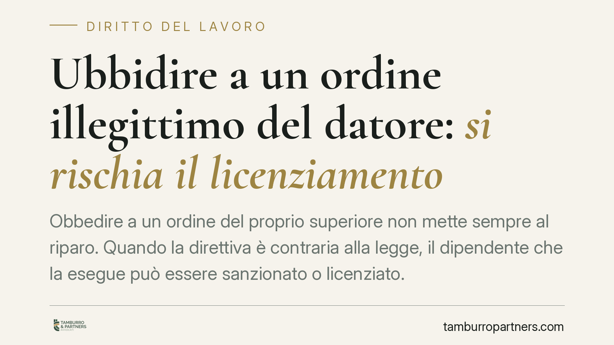

Ubbidire a un ordine illegittimo del datore: si rischia il licenziamento
Obbedire a un ordine del proprio superiore non mette sempre al riparo. Quando la direttiva è contraria alla legge, il dipendente che la esegue può essere sanzionato o licenziato. Il dovere di obbedienza incontra un limite invalicabile: la legalità. Vediamo quando l'esecuzione di un ordine diventa un rischio e come tutelarsi.

Il caso: obbedire non è sempre una scusa
Un dipendente riceve un'istruzione dal proprio superiore e la esegue. Poi arriva la contestazione disciplinare, fino al licenziamento. La difesa istintiva — "mi era stato ordinato" — non basta a escludere la responsabilità quando l'ordine impartito era illegittimo, cioè contrario alla legge o a norme imperative.
Il principio è coerente con l'impianto del rapporto di lavoro subordinato: l'obbedienza è dovuta, ma non è incondizionata.
Inquadramento normativo
Il vincolo di subordinazione nasce dall'art. 2094 c.c., che definisce il prestatore di lavoro come colui che si obbliga a collaborare nell'impresa alle dipendenze e sotto la direzione del datore.
Da qui discende l'art. 2104 c.c., che va letto correttamente nei suoi due commi:
- comma 1: il lavoratore deve usare la *diligenza* richiesta dalla natura della prestazione;
- comma 2: il lavoratore deve *osservare le disposizioni* impartite dall'imprenditore e dai collaboratori dai quali dipende gerarchicamente.
È il comma 2 a fondare il cosiddetto dovere di obbedienza. Ma questo dovere trova un limite naturale: le direttive vincolanti sono quelle *legittime*. Un ordine che imponga di commettere un illecito — civile, amministrativo o penale — non è coperto dal potere direttivo del datore e non genera alcun obbligo di esecuzione. Anzi, eseguirlo può integrare una violazione autonomamente sanzionabile.
La giurisprudenza di legittimità è consolidata su questo bilanciamento tra obbedienza e legalità: il potere direttivo non può spingersi fino a pretendere condotte antigiuridiche, e l'adesione consapevole a un ordine illecito non esonera il lavoratore da responsabilità.
Cosa cambia per il lavoratore
Le conseguenze pratiche sono due, di segno opposto.
Se esegui un ordine illegittimo, non puoi trincerarti dietro l'input ricevuto. A seconda della gravità, rischi una sanzione conservativa o, nei casi più seri, il licenziamento — anche per giusta causa, quando la condotta lede irreparabilmente il vincolo fiduciario.
Se rifiuti un ordine illegittimo, il rifiuto è legittimo e non può essere sanzionato. Un licenziamento adottato come reazione a un rifiuto giustificato è illegittimo e impugnabile.
Il punto delicato è la valutazione: non ogni ordine sgradito è illegittimo. Il confine passa dalla contrarietà a norme di legge, non dal semplice dissenso o dall'inopportunità gestionale.
Il procedimento disciplinare e i termini
Ogni sanzione, incluso il licenziamento disciplinare, deve rispettare le garanzie dell'art. 7 della L. 300/1970 (Statuto dei lavoratori): contestazione scritta e specifica dell'addebito, e diritto del lavoratore a presentare le proprie giustificazioni.
Due tempistiche vanno tenute a mente:
- Il lavoratore ha almeno 5 giorni dalla contestazione per rendere le giustificazioni (art. 7 L. 300/1970); la sanzione non può essere applicata prima.
- In caso di licenziamento, l'impugnazione va proposta entro 60 giorni in via stragiudiziale (art. 6 L. 604/1966) e, successivamente, il ricorso in tribunale va depositato entro i 180 giorni ulteriori. Il mancato rispetto di questi termini comporta la decadenza.
Cosa fare in concreto
- Fermati prima di eseguire: se un ordine appare contrario alla legge, non darvi seguito in automatico. Chiedi chiarimenti e, se possibile, la conferma per iscritto.
- Metti a verbale il dissenso: comunica le ragioni del rifiuto in forma scritta (e-mail, PEC), così da documentare la propria buona fede.
- Conserva la documentazione: ordini, messaggi, disposizioni interne. In caso di contenzioso, la prova dell'illegittimità della direttiva è decisiva.
- Rispondi alla contestazione nei termini: presenta le giustificazioni entro il termine minimo di 5 giorni, in modo puntuale e circostanziato.
- Attiva l'impugnazione nei tempi: se ricevi un licenziamento, verifica subito i termini di 60 e 180 giorni per non incorrere in decadenza.
La valutazione sulla legittimità di un ordine è tecnica e va condotta caso per caso: è opportuno acquisire un supporto professionale prima di assumere iniziative che possano incidere sul rapporto di lavoro.
---
Contributo informativo a cura di Tamburro & Partners - Avv. Giuseppe Tamburro. Non costituisce parere legale.
Ogni storia di lavoro ha i suoi tempi.
Se gestisci HR e vuoi un confronto su contenzioso, ispezioni o licenziamenti, scrivi allo studio. Ti rispondiamo entro un giorno lavorativo.